FireAssist ist ein digitaler Hydrantenplan für die Feuerwehr. Die App zeigt auf einer Karte alle Hydranten und anderen Löschwasser-Entnahmestellen mit dem Leitungsnetz. Sie findet mit der Umkreissuche die nächsten Entnahmestellen zur Einsatzstelle. Außerdem enthält sie die Funkrufnamen der Fahrzeuge und eine Hilfe für Gefahrstoffe (Warntafel, Stoffliste, Grundwissen).
FireAssist läuft im Browser und lässt sich auf Android und iPhone wie eine App installieren. Sie funktioniert auch ohne Netz. Die Einsatzdaten bleiben auf deinem Gerät und werden nie ins Internet hochgeladen.
Alle Angaben ohne Gewähr. FireAssist ist ein Hilfsmittel und ersetzt weder Ortskenntnis noch Erkundung oder amtliche Pläne. Lage, Zustand und Leistung der Entnahmestellen immer vor Ort prüfen. Angaben zu Gefahrstoffen mit aktuellen Quellen abgleichen.
FireAssist kommt nicht aus dem App-Store, sondern direkt aus dem Browser. Die Adresse bekommst du von der Person, die bei euch die Daten pflegt (öffentlich: linusl2005.github.io/FireAssist). Das Installieren ist nur einmal nötig und braucht einmal Internet.
Die installierte App hat auf dem iPhone ihren eigenen Speicher. Was du in Safari importiert hast, ist in der App nicht zu sehen. Deshalb Daten immer in der installierten App importieren.
Die Adresse in Chrome oder Edge öffnen. Über das Installieren-Symbol rechts in der Adressleiste lässt sich FireAssist auch dort als App anlegen. Alternativ gibt es FireAssist als einzelne Datei FireAssist.html, die man per Doppelklick öffnet.
Die Daten deiner Feuerwehr (Hydranten, Leitungen, Funkrufnamen, Gefahrstoffe) kommen nie aus dem Internet. Du bekommst sie als Datei von der Person, die die Daten pflegt, z. B. FireAssist_Sicherung_2026-10-16.json per Messenger, interner E-Mail oder USB-Stick.
Kommt ein neuer Datenstand, wiederholst du diese Schritte. Wie die Datei entsteht, steht unter Sicherung speichern und verteilen.
Nach dem Start siehst du die Karte. Alle wichtigen Funktionen erreichst du mit einem Tipp:
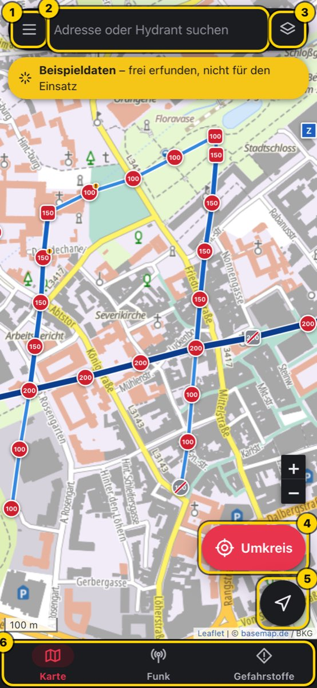
Tippst du etwas an, öffnet sich unten ein Panel mit den Details. Den grauen Strich oben am Panel kannst du antippen oder nach oben ziehen, dann wird es größer. Ziehst du ihn nach unten, schließt sich das Panel. Mit ✕ schließt du es ebenfalls.
Die Zurück-Taste des Handys (Android) schließt der Reihe nach Dialog, Suche, Seite, Modus und Panel.
Zum Kennenlernen gibt es erfundene Beispieldaten rund um die „Musterstadt“. Alle Beispiele sind gekennzeichnet: Nummern beginnen mit BSP-, Bemerkungen mit „Beispiel“, und oben auf der Karte steht der gelbe Hinweis Beispieldaten.
Beispieldaten ersetzen vorhandene Daten (mit Rückgängig zurückholbar). Vor dem Import der echten Daten über ☰ → Daten und Bearbeiten → Alle Daten löschen aufräumen.
Die App aktualisiert sich selbst: Beim nächsten Start mit Internet lädt sie die neue Version im Hintergrund und zeigt unten Neu laden. Tippst du darauf, startet die neue Version.
Die Daten ändern sich dadurch nicht. Ein neuer Datenstand kommt immer als Datei (siehe Daten aufs Handy bringen).
Mit einem Finger verschiebst du die Karte, mit zwei Fingern zoomst du. Doppeltippen zoomt hinein. Ab einer bestimmten Zoomstufe stehen die Nummern an den Hydranten und die Nennweiten an den Leitungen.
Die Karte merkt sich den letzten Ausschnitt. Über ☰ → Alle Daten auf der Karte zeigen siehst du wieder das ganze Einsatzgebiet.
Was die Symbole bedeuten, zeigt jederzeit ☰ → Legende.
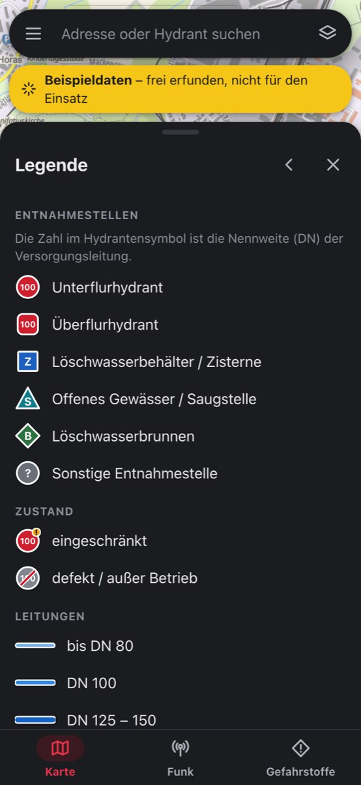
Tippe auf ein Symbol. Unten öffnet sich ein Panel mit allen Angaben zur Entnahmestelle.
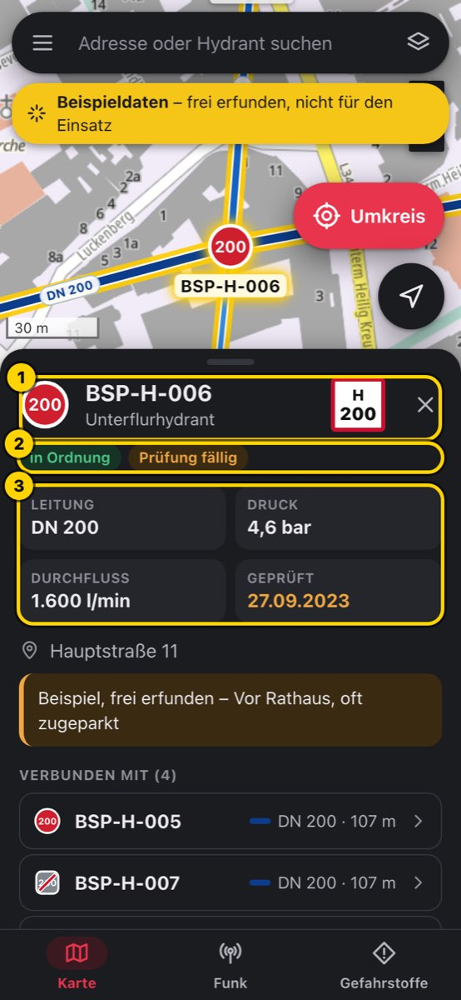
Darunter stehen Adresse bzw. Lage, die Bemerkung und die verbundenen Entnahmestellen (antippen springt dorthin). Ganz unten im Panel (nach oben wischen):
Tippst du auf eine Leitung, zeigt das Panel Nennweite, die beiden Enden und die Länge.
Der runde Knopf mit dem Pfeil rechts unten (Mein Standort) zeigt deine Position als blauen Punkt und setzt die Karte dorthin. Der hellblaue Kreis zeigt die Genauigkeit.
Beim ersten Mal fragt das Handy, ob FireAssist den Standort verwenden darf. Bitte erlauben. Hast du es abgelehnt, kannst du es in den Einstellungen des Handys bzw. Browsers nachträglich erlauben (siehe Häufige Fragen).
Das Ebenen-Symbol rechts in der Suchleiste öffnet die Auswahl:
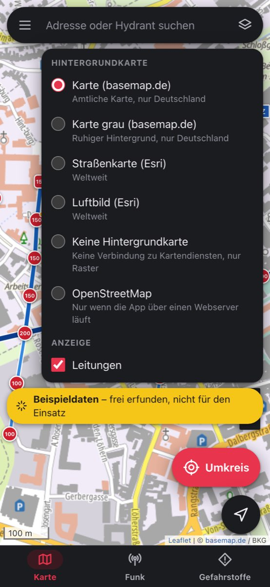
Tippe in das Suchfeld „Adresse oder Hydrant suchen“. Schon beim Tippen erscheinen die Treffer, geordnet nach Art:
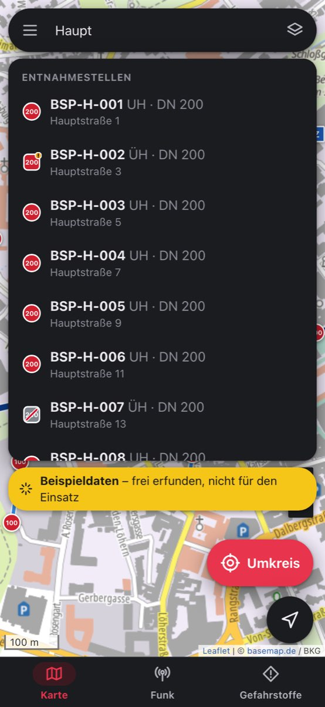
| Eingabe | findet |
|---|---|
| H-012, 12 | Entnahmestelle mit dieser Nummer (auch Teile davon) |
| Hauptstraße | Entnahmestellen mit dieser Adresse oder Bemerkung und, auf Wunsch, Adressen (siehe unten) |
| 50,5515 9,6755 | diese Koordinate auf der Karte |
| 33/1203 | Warntafel: Gefahrnummer und UN-Nummer auswerten |
| 1203, Benzin | Gefahrstoff aus der Stoffliste |
| 17-44, HLF | Funkrufnamen und Fahrzeuge |
Ein Treffer wird angetippt. Eine Entnahmestelle öffnet sich auf der Karte, ein Gefahrstoff oder Funkrufname auf der passenden Seite. Eine Adresse oder Koordinate wird gleich als Einsatzstelle für die Umkreissuche gesetzt.
Adressen werden erst gesucht, wenn du auf Adresse „…“ suchen tippst (oder die Eingabetaste drückst). Dafür braucht es Internet. Übertragen wird nur der Suchtext an den Dienst photon.komoot.io. Ausschalten lässt sich das unter ☰ → Einstellungen → Online-Adresssuche erlauben.
☰ → Alle Entnahmestellen zeigt alle Entnahmestellen als Liste, sortiert nach Nummer.
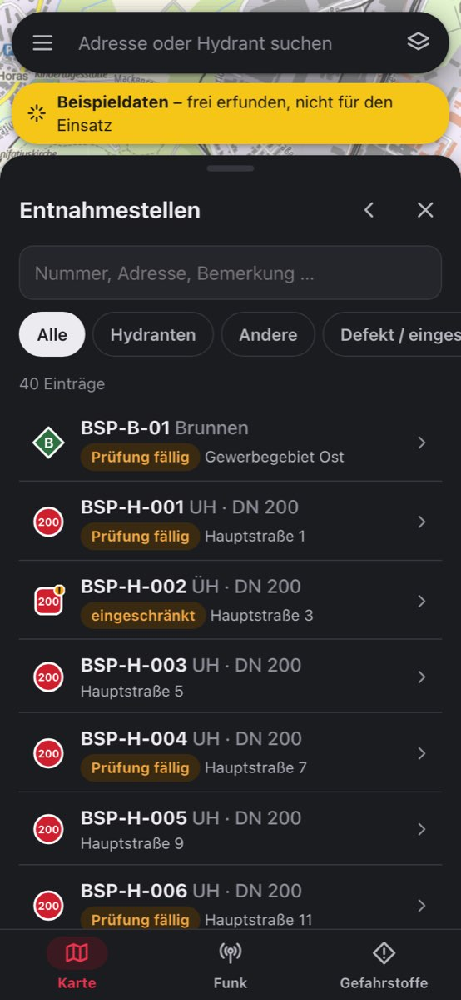
Mit der Umkreissuche findest du die nächsten Entnahmestellen zu einer Einsatzstelle.
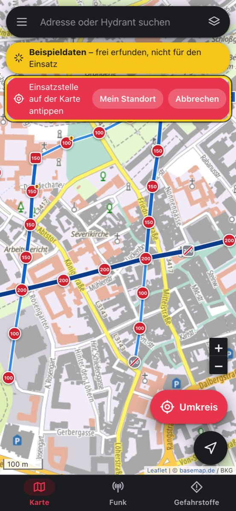
Alternativ suchst du oben eine Adresse oder Koordinate und tippst sie an. Dann wird sie direkt als Einsatzstelle gesetzt.
Die Einsatzstelle erscheint als rotes Symbol mit gestricheltem Kreis. Du kannst das Symbol mit dem Finger verschieben. Die Liste rechnet dann sofort neu.
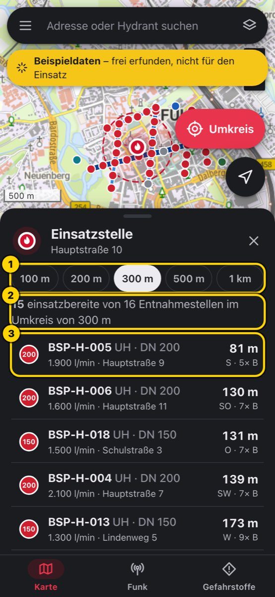
Defekte Entnahmestellen sind ausgegraut. Zu den fünf nächsten einsatzbereiten führt eine gestrichelte Linie auf der Karte. Gibt es im Umkreis weniger als drei einsatzbereite, zeigt die App zusätzlich die nächsten außerhalb.
Entfernungen sind Luftlinie. Die tatsächliche Schlauchstrecke ist länger.
Ein Eintrag öffnet die Entnahmestelle. Mit Zurück zur Einsatzstelle kommst du wieder zur Liste. Neu setzen wählt eine andere Einsatzstelle, ✕ beendet die Umkreissuche.
Unten auf Funk tippen. Die Seite zeigt alle Fahrzeuge mit Fahrzeugart und Funkname, gegliedert nach Gemeinde → Löschverbund → Ortschaft.
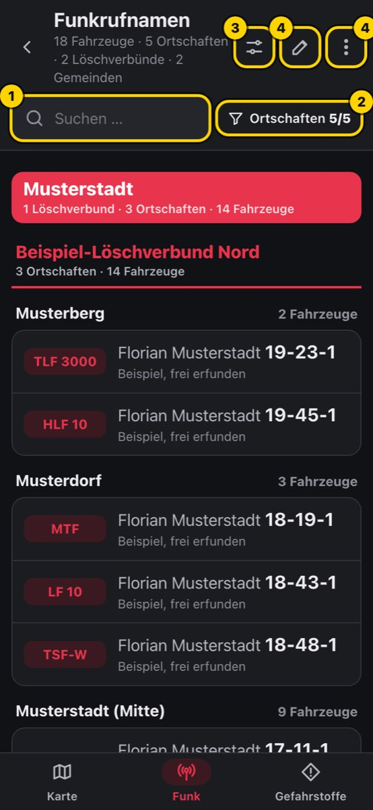
Kennzeichen und Bemerkungen stehen klein unter dem Funknamen.
Das Regler-Symbol oben öffnet Ansicht:
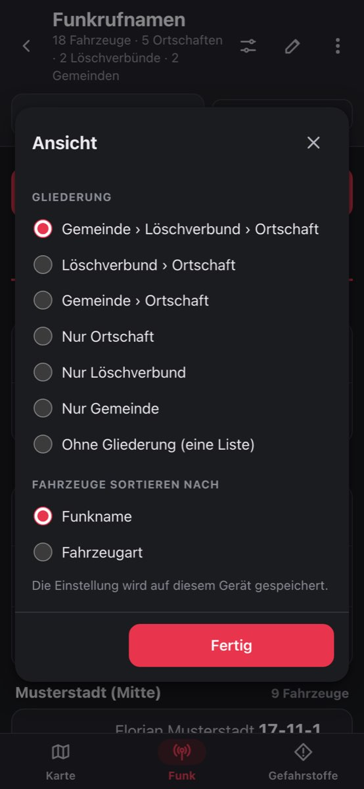
Was nicht als Überschrift erscheint, steht klein am Fahrzeug. Die Einstellung gilt nur für dieses Gerät.
Mit dem Knopf Ortschaften neben dem Suchfeld wählst du, was angezeigt wird. Das ist praktisch, wenn du meist nur die eigene Gemeinde brauchst.
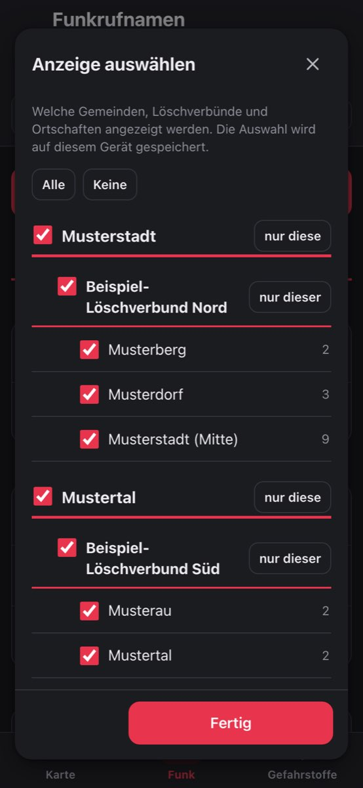
Die Auswahl gilt nur für dieses Gerät. Die Suche findet trotzdem immer alle Fahrzeuge.
Unten auf Gefahrstoffe tippen, Reiter Warntafel. Die beiden Felder sehen aus wie die orangefarbene Warntafel:
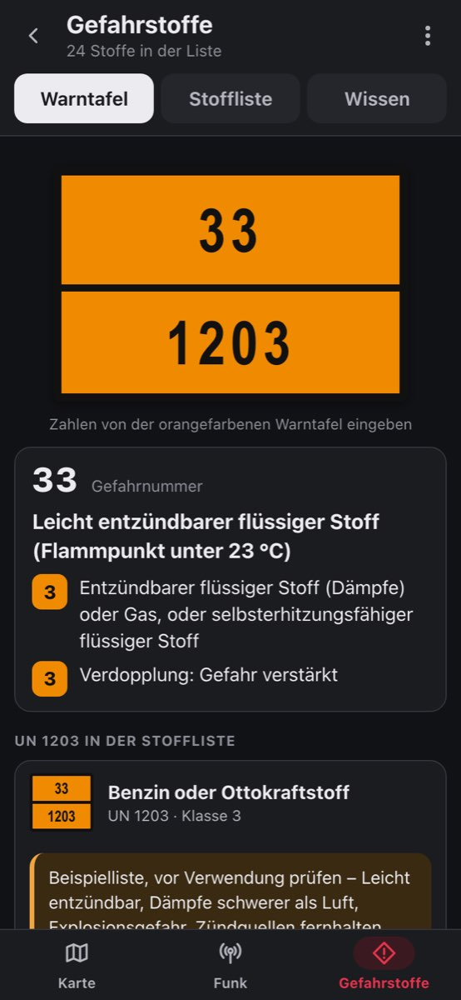
Die App erklärt die Gefahrnummer Ziffer für Ziffer. Steht ein X davor, erscheint die Warnung „Reagiert gefährlich mit Wasser!“. Steht die UN-Nummer in eurer Stoffliste, erscheint darunter der Stoff mit Klasse und Hinweisen. Sonst gibt es einen Link zum Nachschlagen (dafür braucht es Internet).
Schneller geht es über die Suche auf der Karte: 33/1203 eingeben und den Treffer antippen.
Erst Eigenschutz: Abstand halten, Wind im Rücken, GAMS-Regel. Angaben ohne Gewähr.
Reiter Stoffliste: Die Liste enthält die Stoffe, die bei euch hinterlegt sind, z. B. aus Betrieben im Einsatzgebiet. Oben nach UN-Nummer oder Stoffname suchen. Ein Eintrag klappt beim Antippen auf und zeigt Gefahrnummer, Klasse, Hinweise und einen Link zum Nachschlagen.
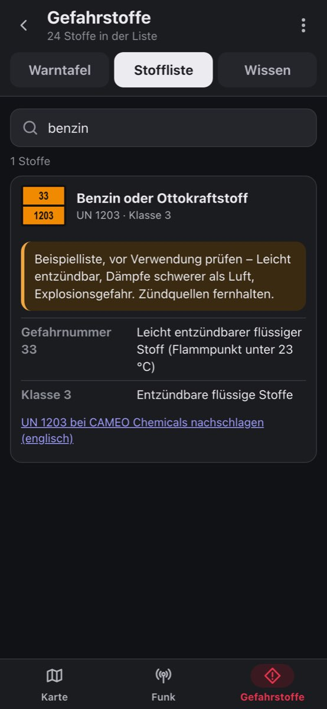
Findet die Suche nichts, bietet die App einen Link zum Nachschlagen an (UN-Nummer bei CAMEO Chemicals, Name bei Wikipedia).
Reiter Wissen: Grundwissen zum Aufklappen, auch ohne Netz verfügbar:
Für die Absperrbereiche hilft die Umkreissuche auf der Karte mit 100 m Radius.
Entnahmestellen und Leitungen legst du direkt auf der Karte an. Dazu muss der Bearbeitungsmodus an sein:
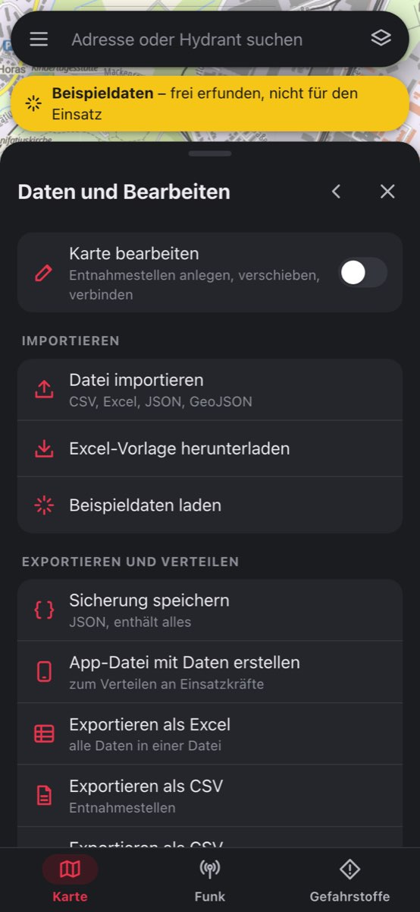
Oben erscheint die blaue Leiste „Bearbeiten: Karte antippen = neue Entnahmestelle, Symbole verschiebbar“:
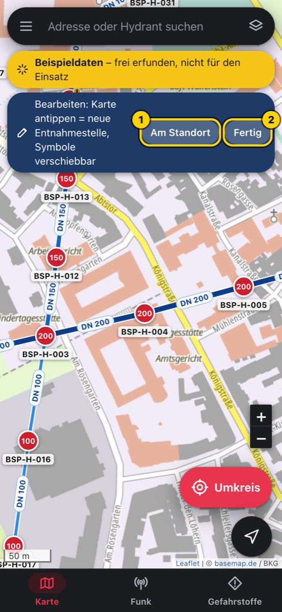
Solange der Modus an ist, lassen sich alle Symbole mit dem Finger verschieben. Beende ihn deshalb nach der Arbeit mit Fertig.
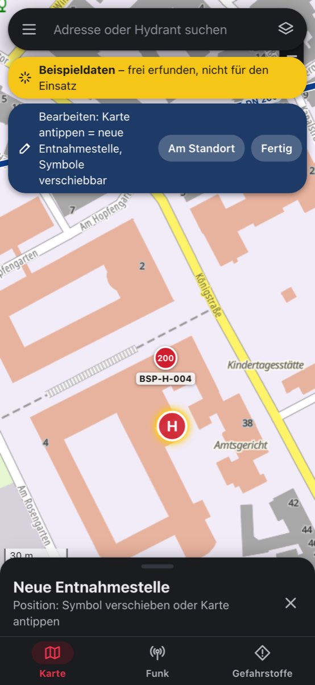
Leitungen werden dabei nicht angelegt, das geht mit Verbinden. Ist ein Panel offen, schließt der erste Tipp auf die Karte zuerst das Panel. Erst der nächste Tipp legt etwas an.
| Feld | Bedeutung |
|---|---|
| ID / Nummer | Eindeutige Nummer, z. B. H-012. Wird vorgeschlagen, darf aber geändert werden. Jede Nummer gibt es nur einmal. |
| Typ | Unterflurhydrant, Überflurhydrant, Löschwasserbehälter / Zisterne, offenes Gewässer / Saugstelle, Löschwasserbrunnen oder sonstige Entnahmestelle. |
| Leitung DN | Nennweite der Versorgungsleitung (nur bei Hydranten). Steht als Zahl im Symbol. |
| Volumen (m³) | Inhalt (nur bei Behältern, Gewässern, Brunnen). |
| Status | in Ordnung, eingeschränkt, defekt oder unbekannt. |
| Druck (bar), Durchfluss (l/min) | Messwerte, falls bekannt. |
| Geprüft am | Datum der letzten Prüfung. Heute trägt das heutige Datum ein. Nach 12 Monaten erscheint „Prüfung fällig“. |
| Adresse / Lage | z. B. „Hauptstraße 12, Gehweg“. Wird von der Suche gefunden. |
| Bemerkung | z. B. „oft zugeparkt“. |
| Breitengrad, Längengrad | Position. Ändert sich beim Verschieben des Symbols mit. Meinen Standort übernehmen setzt die GPS-Position ein. |
Nur ID und Position sind Pflicht. Alles andere kannst du später ergänzen.
Im Bearbeitungsmodus:
Jede Änderung lässt sich rückgängig machen.
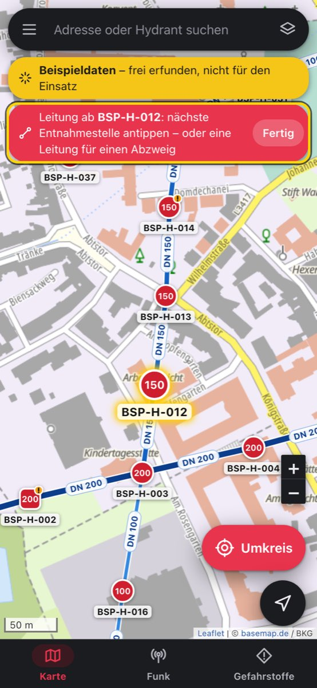
Die Nennweite der neuen Leitung übernimmt die App von den Hydranten (die kleinere der beiden). Tippst du beim Verbinden statt einer Entnahmestelle auf eine Leitung, entsteht dort ein Abzweig (siehe Leitungsknoten).
Im Bearbeitungsmodus eine Leitung antippen. Im Panel änderst du Nennweite und Bemerkung.
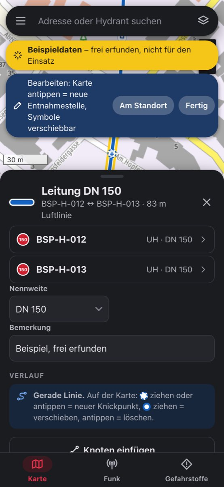
Damit die Leitung der Straße folgt, kannst du ihr Knickpunkte geben. Auf der Karte erscheinen dazu Punkte auf der Leitung:
Wo eine Leitung abzweigt oder kreuzt, ohne dass dort ein Hydrant steht, setzt du einen Leitungsknoten.
Beim Verbinden statt einer Entnahmestelle die Leitung an der Abzweigstelle antippen. Dort entsteht ein Knoten, und die neue Leitung führt zu ihm.
Knoten lassen sich verschieben. Wird ein Knoten mit genau zwei Leitungen gelöscht, werden sie wieder zu einer. Knoten zählen nicht als Entnahmestelle: Sie erscheinen nicht in Umkreissuche, Liste und Suche.
Nach jeder Änderung erscheint unten kurz ein Hinweis mit Rückgängig. Hast du ihn verpasst: ☰ → Daten und Bearbeiten → Rückgängig. Dort steht auch, was zurückgenommen wird.
Die App merkt sich die letzten 15 Schritte, solange sie geöffnet ist. Das gilt auch für Import, Beispieldaten und „Alle Daten löschen“.
Liste noch leer: Auf der Seite Funk auf Fahrzeug anlegen tippen.
Liste vorhanden:
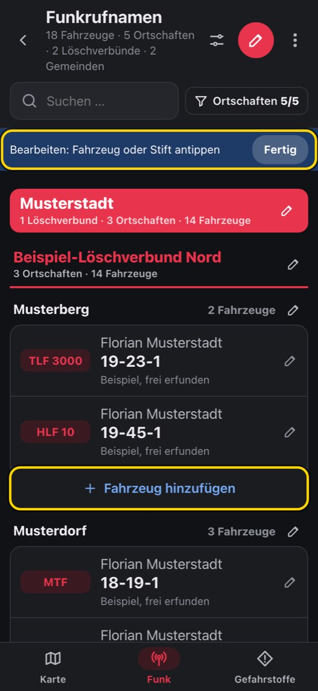
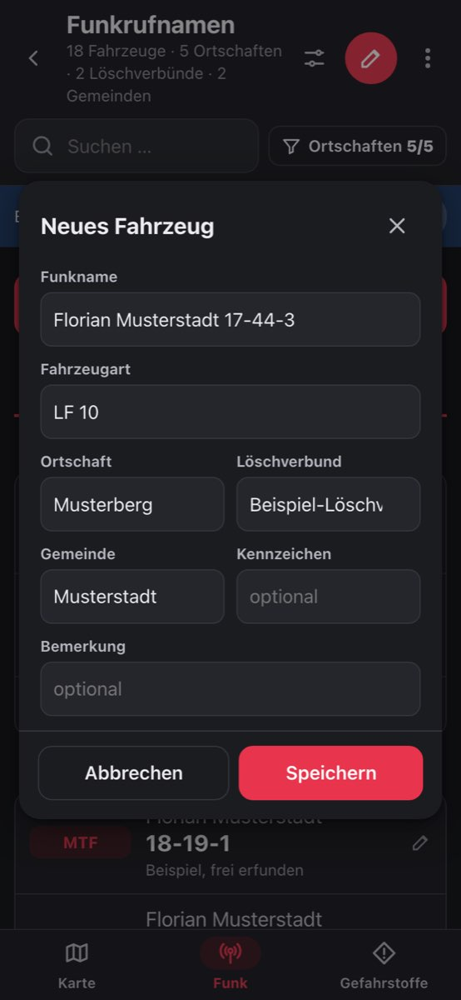
| Feld | Bedeutung |
|---|---|
| Funkname | Pflicht, z. B. „Florian Musterstadt 17-44-2“. Jeder Funkname darf nur einmal vorkommen. |
| Fahrzeugart | z. B. HLF 20, DLK 23/12, MTW. |
| Ortschaft | Standort des Fahrzeugs (Ortsfeuerwehr, Wache). |
| Löschverbund, Gemeinde | optional, für die Gliederung. |
| Kennzeichen, Bemerkung | optional, stehen klein am Fahrzeug. |
Beim Tippen schlägt die App bereits vorhandene Fahrzeugarten, Ortschaften, Löschverbünde und Gemeinden vor.
Im Bearbeitungsmodus (Stift oben):
Jede Änderung lässt sich rückgängig machen.
Das Symbol ⋮ oben auf der Seite Funk öffnet Funkrufnamen verwalten:
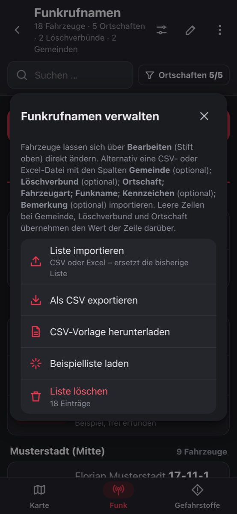
Die Stoffliste wird über eine Datei eingerichtet, nicht Stoff für Stoff in der App. Auf der Seite Gefahrstoffe oben auf ⋮ tippen → Stoffliste verwalten:
Die Beispielliste enthält nur gängige Stoffe und ersetzt keine vollständige Datenbank. Vor dem Einsatz mit aktueller Quelle prüfen (ADR, GESTIS, ERICards).
Am bequemsten geht das am PC. Die Daten stehen meist schon in einer Excel-Liste.
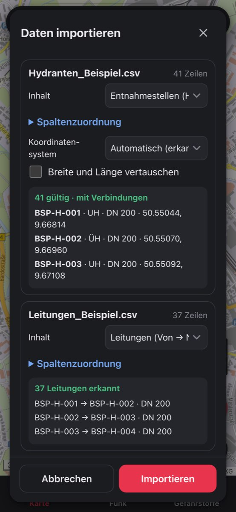
Für jede Datei bzw. jedes Excel-Blatt zeigt das Fenster:
Gibt es schon Hydrantendaten, wählst du:
Funkrufnamen und Stoffliste werden beim Import immer ersetzt. Auch ein Import lässt sich rückgängig machen.
Eine Tabelle, eine Zeile pro Entnahmestelle. Die Reihenfolge der Spalten ist egal. Am einfachsten startest du mit ☰ → Daten und Bearbeiten → Excel-Vorlage herunterladen.
| Spalte | Pflicht | Beispiel |
|---|---|---|
| ID | empfohlen | H-001 |
| Typ | nein | Unterflurhydrant, Überflurhydrant, Löschwasserbehälter, Offenes Gewässer, Löschwasserbrunnen, Leitungsknoten |
| Breitengrad, Längengrad | ja | 50,5515 und 9,6755 |
| Leitung DN | nein | 150 |
| Druck bar, Durchfluss l/min, Volumen m³ | nein | 5,5 · 1600 · 100 |
| Status | nein | in Ordnung, eingeschränkt, defekt |
| Geprüft am | nein | 14.03.2025 |
| Adresse / Lage, Bemerkung | nein | Freitext |
| Verbunden mit | nein | H-002, H-005 |
Koordinaten dürfen in Grad (WGS84), in UTM/ETRS89 (Zone 32 oder 33) oder in Gauß-Krüger vorliegen. Das System wird automatisch erkannt.
Leitungen gibst du auf eine von zwei Arten an:
Optional hat die Leitungstabelle eine Spalte Verlauf mit Knickpunkten, z. B. „50.5524 9.6769; 50.5527 9.6770“ (Breite Länge, Punkte durch Semikolon getrennt). Abzweige ohne Hydrant sind Zeilen vom Typ Leitungsknoten in der Tabelle der Entnahmestellen.
| Spalte | Pflicht | Beispiel |
|---|---|---|
| Gemeinde | nein | Musterstadt |
| Löschverbund | nein | Löschverbund Nord |
| Ortschaft | ja | Musterdorf |
| Fahrzeugart | ja | HLF 20 |
| Funkname | ja | Florian Musterstadt 17-46-1 |
| Kennzeichen, Bemerkung | nein | Freitext |
Leere Zellen bei Gemeinde, Löschverbund und Ortschaft übernehmen den Wert aus der Zeile darüber. Ohne Gemeinde und Löschverbund wird nur nach Ortschaft gegliedert.
| Spalte | Beispiel |
|---|---|
| UN-Nummer | 1203 |
| Bezeichnung | Benzin oder Ottokraftstoff |
| Gefahrnummer | 33 |
| Klasse | 3 |
| Hinweise | Dämpfe schwerer als Luft |
| Link (optional) | Adresse eines Datenblatts |
UN-Nummer oder Bezeichnung muss ausgefüllt sein. Ohne eigenen Link verweist die App auf CAMEO Chemicals (englisch).
Alle Listen können auch zusammen in einer Excel-Datei stehen, ein Blatt je Liste. Die App erkennt die Blätter an den Spalten.
Die Sicherung ist eine Datei mit allen Daten: Entnahmestellen, Leitungen, Funkrufnamen und Stoffliste. Mit ihr bringst du einen Datenstand auf andere Geräte.
Einsatzdaten nie öffentlich ins Internet stellen, auch nicht verschlüsselt oder hinter einem Passwort.
Beim Import einer Sicherung fragt die App, ob vorhandene Daten ersetzt oder ergänzt werden sollen. Für einen neuen Datenstand Ersetzen wählen.
☰ → Daten und Bearbeiten → App-Datei mit Daten erstellen erzeugt eine Kopie der App als eine einzige HTML-Datei, in der der aktuelle Datenstand fest eingebaut ist. Sie öffnet sich am PC oder Laptop per Doppelklick im Browser, ohne Installation und ohne Import.
Sind auf einem Gerät schon eigene Änderungen gespeichert, fragt die App beim Öffnen, ob der neue Datenstand übernommen oder die eigenen Daten behalten werden sollen.
Für Handys ist die Sicherung der einfachere Weg.
☰ → Daten und Bearbeiten → Alle Daten löschen entfernt Entnahmestellen, Leitungen, Funkrufnamen und Stoffliste von diesem Gerät. Die App fragt vorher nach. Solange sie geöffnet bleibt, geht es mit Rückgängig zurück. Speichere vorher besser eine Sicherung.
Damit die Karte auch im Einsatz ohne Netz erscheint, speicherst du das Einsatzgebiet einmal auf dem Handy, am besten im WLAN. Das geht in der installierten App bzw. der Web-Version.
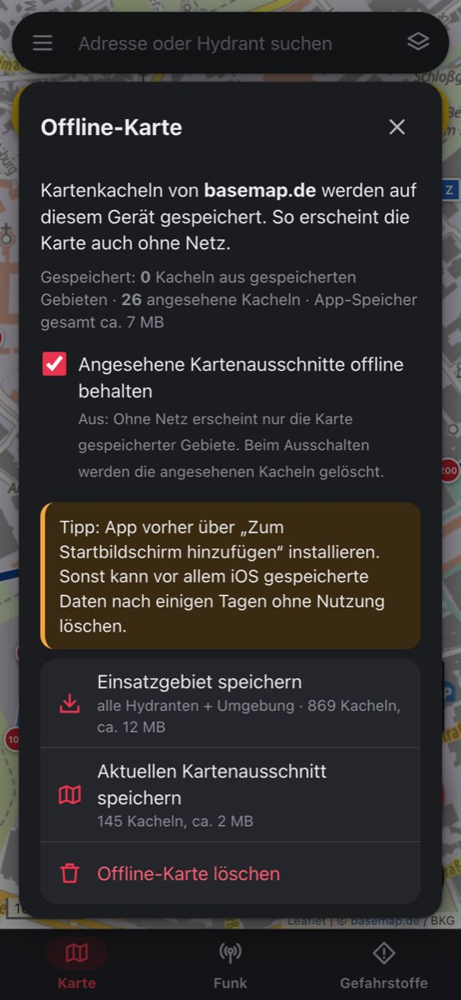
Offline gespeichert wird die Karte von basemap.de (bunt oder grau, je nach gewählter Hintergrundkarte).
Ohne Internet funktionieren: Hydranten und Leitungen, Suche nach Nummer, Umkreissuche, eigener Standort (GPS), Funkrufnamen, Gefahrstoffe mit Wissen, Bearbeiten, Import und Export.
Nicht ohne Netz: die Hintergrundkarte außerhalb gespeicherter Gebiete (dann ist ein Raster zu sehen), die Adresssuche, die Navigation in der Karten-App und Links zu Datenbanken.
☰ → Einstellungen:
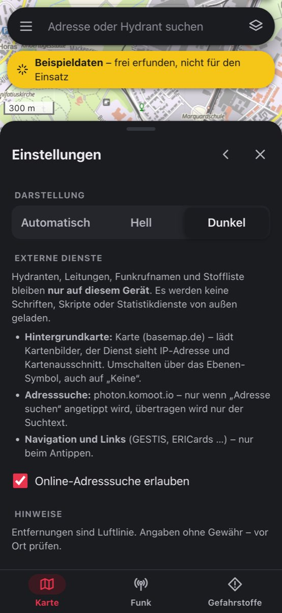
☰ → Handbuch. Das Handbuch ist in die App eingebaut und funktioniert auch ohne Netz.
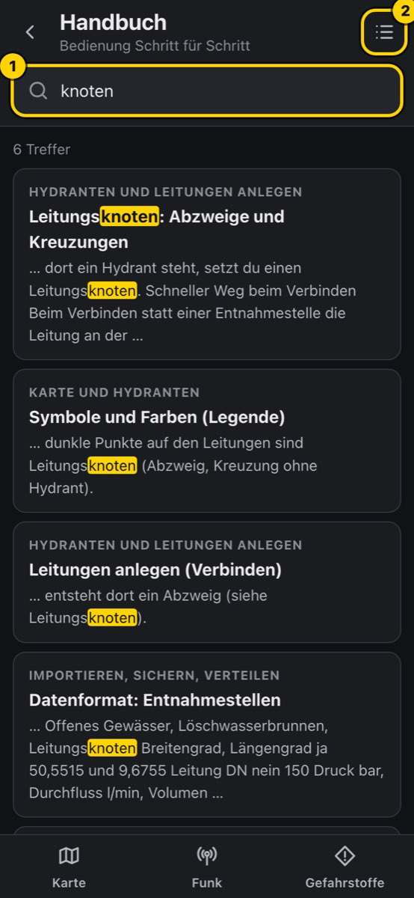
Unterstrichene Verweise im Text springen zum genannten Thema.
Hydranten, Leitungen, Funkrufnamen und Stoffliste bleiben nur auf deinem Gerät. Die App lädt keine Schriften, Skripte oder Statistikdienste von außen. Verbindungen gibt es nur in diesen Fällen:
Wurde in Safari importiert, aber die App über das Symbol geöffnet (oder umgekehrt)? Beide haben getrennte Speicher. Immer die installierte App benutzen und dort importieren. Seiten, die nur in Safari geöffnet werden, löscht iOS außerdem nach 7 Tagen ohne Besuch.
Erlaube den Standort in den Einstellungen des Handys. iPhone: Einstellungen → Datenschutz → Ortungsdienste → Safari bzw. FireAssist. Android: lange auf das App-Symbol drücken → App-Info → Berechtigungen → Standort.
Es gibt kein Netz und für diesen Ort keine gespeicherte Karte, oder unter Kartenebenen ist „Keine Hintergrundkarte“ gewählt. Hydranten und Leitungen sind trotzdem da. Abhilfe: Offline-Karte speichern.
Import rückgängig machen, neu importieren und im Fenster Daten importieren das Koordinatensystem wählen oder „Breite und Länge vertauschen“ ankreuzen. Die Vorschau zeigt die Koordinaten der ersten Einträge.
Im Fenster Daten importieren „Spaltenzuordnung“ aufklappen und die Spalte von Hand zuordnen.
Sofort Rückgängig im Hinweis unten tippen, oder ☰ → Daten und Bearbeiten → Rückgängig.
Der Bearbeitungsmodus ist noch an. Oben in der blauen Leiste Fertig tippen.
Neu laden tippen, dann startet die neue Version. Deine Daten bleiben erhalten.
Es sind erfundene Beispieldaten geladen. Für echte Daten: ☰ → Daten und Bearbeiten → Alle Daten löschen, dann die eigene Sicherung importieren.